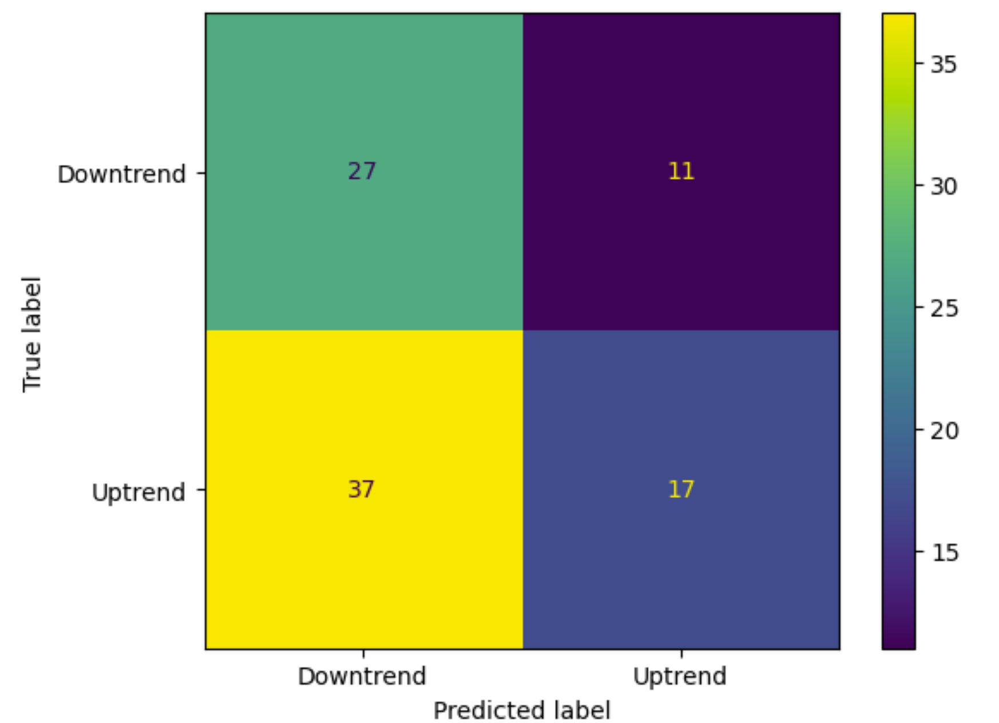
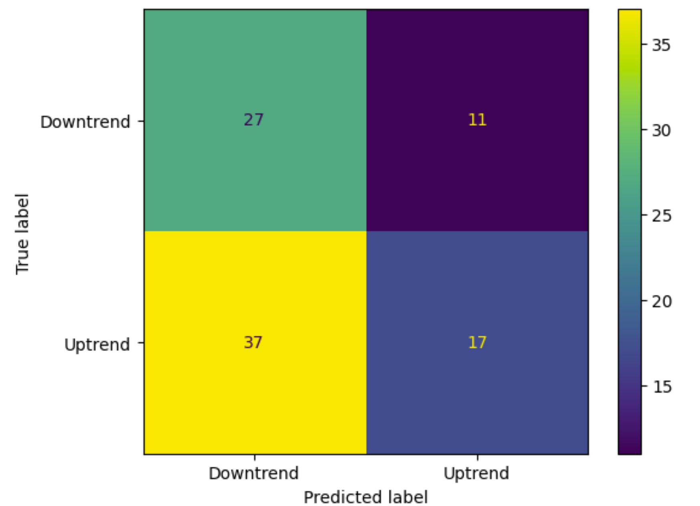

Predicting Stock Market Trends Using News Sentiment Analysis
CS539 Group Project
Vagmi Bhagavathula, Jared Chan, Deepti Gosukonda, Adina Palayoor, Bishoy Soliman-Hanna
Project Motivation
We wanted to determine if we could use a combination of past stock data with the overall sentiment in the news for a company to determine whether the company's stock will increase or decrease. This will help investors observe how the news may impact the performance of a particular company's stock.
Data
Stock Data
We fetch the last 2 years (2022-01-03 to 2023-12-29) of stock data specifically for APPLE, NVIDIA, and META. Yahoo Finance is used to retrieve stock data for all companies. For stock features, we use the Adjusted Close Price, Open, High, Low, Close Price, and Volume.
News Data
For gathering the news data, we used Google News to query relevant articles from the Google News database. We use both the stock ticker name and the full name of each company as search words. Since NewsAPI is limited and can only provide brief sentences from the articles, we manually webscrape the data by querying the links instead and using BeautifulSoup + URLLib3 to parse the html into text. For parsing only relevant information within each article, we grab text from only
and
Sentiment Data
To obtain the sentiment for each article for a single company, we feed the scraped content (including the title) of each article into a sentiment analysis model. For the model, we use a distilled version of RoBERTa-base-model pretrained on the financial_phrasebank dataset. Pretraining on financial phrases will improve the ability of the sentiment model to capture valuable information from words within the financial vernacular. Furthermore, financial words will have more weight in the final sentiment analysis.
Link to Data
All data csvs can be found here.
Tools and Methods
Additionally, there are some technologies utilized that supported our work in this project:
 Yahoo Finance API: used to gather stock data for the three companies
Yahoo Finance API: used to gather stock data for the three companies Google News API: used to retrieve the news data for a particular company
Google News API: used to retrieve the news data for a particular company Hugging Face: used to obtain the sentiment scores for the news data
Hugging Face: used to obtain the sentiment scores for the news data- urllib3: used to request webpage data
- BeautifulSoup: used to parse webpage html into plaintext
Running the Code
Feature Engineering
We combine our 7 stock features mentioned in the Stock Data section with 6 crafted sentiment features. For our 6 sentiment features, we use the number of articles and the mean probability by sentiment class (negative, neutral, positive). Note that because stock data is not available for all days in the past 2 years (due to days where market was closed), sentiment for certain days are removed. This allows perfect joins over the data tables to occur. Our list of final features is as follows:
- Adj Close
- Close
- High
- Low
- Open
- Volume
- mean_neg_sentiment_prob
- mean_neu_sentiment_prob
- mean_pos_sentiment_prob
- neg_sentiment_cnt
- neu_sentiment_cnt
- pos_sentiment_cnt
Training and Inference
We preprocess our data for training by standardizing features via removal of the mean and scaling to unit variance. For performing the train-test split, it's important to note that using SKLearn's built-in function is not advisable because it randomly splits the data. Due to the time-series aspect of the data, the train-test split is done sequentially by using the last 97 days (~20% of data) of stock data as the test. The first 391 days are used for training. After performing the train-test split, we get 198 samples for the Uptrend class and 193 samples for the Downtrend class. The overall train set is quite balanced. The testing set consists of 56 Uptrend and 41 Downtrend samples.
Results
We ran 8 machine learning models to determine which one was able to predict if a company was going to have an upward or downward trend in their stocks with the best accuracy. The accuracies for these models change based on the company we are looking at. Below we give a preview of the accuracy metrics as well as the confusion matrix specifically for NVIDIA.
Random Forest

AdaBoost
 

Gradient Boosting


Logistic Regression

GaussianNB

SVM

Decision Tree


Neural Network
Overview of Models
Below we have the graphs displaying the results of the models as well as a table summarizing the results of each machine learning model for each company. The model with the best accuracy for a particular company is highlighted in green.


| Model | Accuracy NVIDIA | Accuracy META | Accuracy APPLE |
|---|---|---|---|
| Random Forest | 0.435 | 0.490 | 0.557 |
| AdaBoost | 0.478 | 0.449 | 0.505 |
| Gradient Boosting | 0.424 | 0.449 | 0.526 |
| Logistic Regression | 0.446 | 0.459 | 0.454 |
| GaussianNB | 0.413 | 0.459 | 0.433 |
| SVM | 0.576 | 0.531 | 0.433 |
| Decision Tree | 0.467 | 0.469 | 0.608 |
| Neural Network | 0.435 | 0.469 | 0.629 |
Effect of Sentiment Features
We perform a small experiment with the Decision Tree classifier to understand how much the sentiment features make a difference when predicting stock trends. We perform prediction on the test data with and without sentiment features for comparison.
Without Sentiment Features
With Sentiment Features
We find that sentiment does signifcantly improve stock trend prediction and improves accuracy by ~9%. The Decision Tree model trained without sentiment features seems to gain heavy bias towards predicting the Downtrend class while the model with sentiment features has less overall bias.